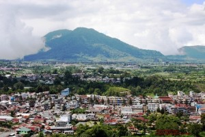

erastagi adalah sebuah kecamatan di Kabupaten Karo, provinsi Sumatra Utara, Indonesia. Berastagi merupakan kecamatan terbesar kedua di dataran tinggi karo setelah Kabanjahe.
Berastagi merupakan salah satu tujuan wisata yang populer di Sumatra Utara, dan berbatasan dengan
Berastagi merupakan salah satu tujuan wisata yang populer di Sumatra Utara, dan berbatasan dengan
ini adalah tempat wisata di sumatera utara yg wajib kamu kunjungin
